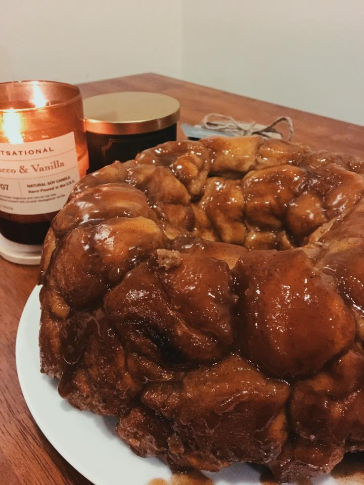

How to make: Monkey Bread
| Prep - |
Bake - |
Ready |
| 15 min - |
35 min - |
1 hour |
Ingredients
- ½ cup margarine
- ½ cup chopped walnuts (optional)
- ½ cup raisins (optional)
- 1 cup of brown sugar
- 1 cup of white sugar
- 2 teaspoons ground cinnamon
- 3 (12 ouce) packages refrigerated biscuit dough
Directions
- Preheat oven to 350℉
- Grease a 9 or 10 inch Bundt pan
- Mix the white sugar and cinnamon in a plastic bag. Cut all of the biscuits into quarters.
- Place 5 to 8 of the biscuit quarters into the cinnamon sugar mix. Shake the bag while sealed.
- Place the coated biscuit pieces into the bottom of the pan. Continue until the rest of the biscuits are coated and placed into the pan.
- If you are using raisins, walnuts, or any other ingredients, arrange them throughout the pan as you are placing the biscuts.
- In a smaller saucepan, melt the ½ cup of margarine along with the brown sugar over a medium heat. Boil for about 1 minute and then pour the mix over the biscuits.
- Place the monkey bread into the oven when the timer goes off for 35 minutes.
- Let the bread cool down for 10 minutes and then turn it over onto a clean plate.
- Pull the pieces apart and enjoy!

Enjoy!!!